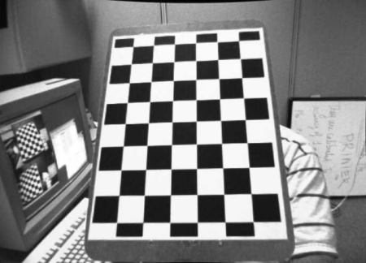
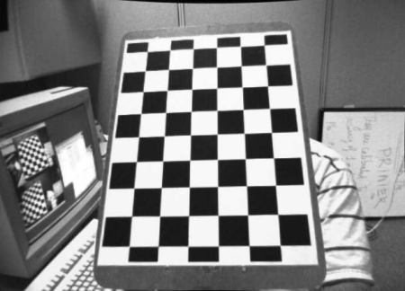

Computing the intrinsic camera matrix using Zhangs algorithm¶
Long time no blogging; but i am very interested in writing this article - the reason being i first used camera calibration in my second year, but that time I had OpenCV to use. ALthough, since that time I had decided to write a tutorial explaining the aspects of it as well. So first things first. I’ll start this off mentioning about 2 articles that helped me get a clearer understanding of the method of calibration, then I will start off with what it is, how it is useful, which parameters it computes, etc. Also, to mention, this article delineates about the intrinsic matrix, and I will be covering {R|T} matrices along with distortion coefficients and image undistortion in an upcoming update to the blog article.
Firstly, some resources:
- Original Paper by Zhengyou Zhang – “A flexible new technique for camera calibration”
- Microsoft Technical Report for Camera Calibration
- Zhang’s Camera Calibration Algorithm: In-Depth Tutorial and Implementation - Report by Wilhelm Burger
- I have also made my own notes, which is basically information from the above resources. Uploaded it here
- Implementation and source code for article : https://github.com/kushalvyas/CameraCalibration
I think one must read all of them to understand this subtle art of calibrating cameras. Although, I’d like to recommend the Microsoft technical report as well as the In-depth tutorial.
Proceeding with the blog article. I shall cover the article in the following sequence.
- Image formation in a Camera \(\rightarrow\) World and Image points
- Concept of Camera Calibration
- Intrinsic and Extrinsic Parameters
- Types of distortions (Radial, Barrel, Pincushion)
- Computation of the intrinsic camera calibration matrix
- Computation of extrinsic parameters (To be Updated)
- Distortion Coefficients and Undistortion (TO be Updated)
Let’s begin!
So here’s how a pinhole camera works. Consider the image below.
Source: Mathworks
As seen, the visual pipeline is capturing the object in 3D from the World coordinate space and converting it through the the aperture ( pinhole, in this case) and projects onto the camera image plane. This leads to the formation of the image.
The concept to be understood is that any point in the 3D world coordinate space is represented by \(P = (X, Y, Z)^T\). There is an essential conversion of the 3D world point \(P\) to a local image coordinate space point, let’s say \(p = (u, v)^T\). Hence for conversion of the points \(P \rightarrow p\), there is an effective projection transform ( just a matrix ) which enables so. The aim of calibration is to find the effective projection transform hence yielding significant information regarding the vision system such as focal lengths, camera pose, camera center, etc. I’ll get to it too. Thus formulating a basic equation for the above paragraph, we can write it as:
where M is a projection matrix converting the World \((X, Y, Z, 1)\) point to the Image \((u, v, 1)\) point. This is a very casual representation of the above process happening through the visual pipeline.
On a broad view, the camera calibration yields us an intrinsic camera matrix, extrinsic parameters and the distortion coefficients. The basic model for a camera is a pinhole camera model, but today’s cheap camera’s incorporate high levels of noise/distortion in the images. For a simple visualization, I’ll put 2 images below. Note that the image on the left shows an image captured by my logitech webcam, followed by the image on the right which shows an undistorted image. The straight lines appear to be bent (curved) in the left image, whereas in the right one it appears normal.
 

Hence, the camera calibration process is useful in providing an accurate input image to any computer vision system in the first place. (computer vision system which deal with pixel/real measurements. For other applications, it is not needed to compute this process).
So let’s start with the camera calibration algorithm.
Camera calibration
We have established the the there basically is a transform that converts the world 3D point to an image point. However, there are a series of sub transforms in between that enable that. The 3D world coordinates undergo a Rigid Body Transform to get the same 3D World coordinates w.r.t the camera space. This newly obtained 3D set of coordinates are then projected into the camera’s image plane yielding a 2D coordinate.
The conversion due to the rigid transformation is due to the “extrinsic parameters”, which comprise of rotation and translation vectors, namely \(R\) & \(T\). On the other hand, the “intrinsic parameters” is the “camera matrix” which is a \(3\text{ x }3\) matrix ( the projective transform).
This is how each of the matrices look like
__ Camera Matrix :(A) __
Where \(\alpha, \ \beta\) is the focal length (\(f_x\), \(f_y\)); \(\gamma\) is pixel skew; (\(u_c,\ v_c\)) is the camera center (origin)
Algorithm for Camera Calibration
The essence of camera calibration starts with estimating a matrix/transform which maps the World Coordinates to Image Plane coordinates. As described above, it eventually ends up being a equation in matrix form. However, let us start with preparing the initial data.
To estimate the transform, Zhang’s method requires images of a fixed geometric pattern; the images of which are taken from multiple views. Let’s say the total number of views are \(M\). Given \(M\) views, each view comprises of a set of points for which image and world coordinates are established. Consider \(N\) points per view.
- For \(M\) views, consider \(M\) images from \(I_0\) to \(I_{M-1}\)
-
For each image \(I_i\) where i = (0 … M-1) : \(N\) correspondence points are computed:
For the above function one can use OpenCV’s findchessboardcorners function. cv2.findChessboardCorners which returns a list of chessboard corners in the image. -
Let the observed points be denoted as \(U\) and the model points be represented as \(X\). For the image/observed points (U) extracted from the M views, let each point be denoted bu \(U_{i,j}\), where \(i\) is the view ; and \(j\) represents the extracted point (chessboard). Hence, \(U_{i,j} = ( u, v)\). At the same time, \(X\) represents a similar structure as \(U\), with each point \(X_{i,j} = (X, Y, Z)\)
-
From each correspondence between model points and image points, compute an associated homography between the points. For each view, compute the homography.
-
From the set of estimated homographies, compute intrinsic parameters \(\alpha, \gamma, u_c, \beta , v_c\).
-
Update parameters using the LM-Optimizer.
-
Once the intrinsics are computed, Rotation and Translation Vectors (extrinsic) are estimated.
-
Using intrinsic and extrinsic parameters as initial guess for the LM Optimizer, refine all parameters.
I’ve described the complete algorithm for Zhang’s camera calibration. However this article will cover till point 6 -> pertaining to the intrinsic params.
Implementation¶
We divide the implementation in the following parts
- Computing observed and model points correspondences.
- Normalization
- Compute view-wise homographies.
- Refine Homography
- Estimate Camera Intrinsic from homographies.
pre { overflow: auto; word-wrap: normal; white-space: pre; }
Computing observed and model points
First of all steps is to collect sample images ( remember, there are M model views to be taken into account.) That means one has to capture \(M\) images through the camera, such that each of the \(M\) images are at a unique position in the camera’s field of view. Once those image sets are captures, we proceed to marking correspondences between the model and the images.
Let’s just mention the imports and other variables.
1 2 3 4 5 6 7 8 9 10 11 12 13 14 15 16 17 | |
The post will use OpenCV’s cv2.findChessboardCorners function for locating chessboard corners from the image. Other than that everything is computed using NumPy.
- Store the images in a
DATAdirectory. - Make an additional directory
DATA/DEBUG/to store debug images
.
.1 2 3 4 5 6 7 8 9 10 11
def show_image(string, image): cv2.imshow(string, image) cv2.waitKey() # read images from DATA_DIR, one at a time # returns image path, as well as image in grayscale def get_camera_images(): images = [each for each in glob.glob(DATA_DIR + "*.jpg")] images = sorted(images) for each in images: yield (each, cv2.imread(each, 0))
- Computing the Chessboard corners using the
cv2.findChessboardCornersfunction. One can note there is an array forimage_pointswhich holds the image coordinates for the chessboard corners. Also, the array namedobject_pointsholds the world coordinates for the same.
WHY CHESSBOARD! : Zhangs method, or even camera calibration in general is concerned with obtaining an transform from real world 3D to image 2D coordinates. Since the grid pattern formed on a chessboard is a really simple, linear pattern, it is natural to go with it. That being said, geometric calibration also requires a mapping for the world and image coordinates. The reason i emphasize on this point is to understand the structure and “shape” (numpy users will be familiar to “shape”) of the previously defined \(U\) and \(X\) data points.
Now, \(U\) is a array/list/matrix/data structure containing of all points in an image \(U_i\). So a given points inside an image will be \(U_{i,j} = (u, v)\) given that \(i\) is the \(i^{th}\) model view ( \(i = (0, M-1)\) , and \(j\) is the \(j^{th}\) point inside the \(i^{th}\) image, where \(j = (0, N-1)\).
One can image it as a vector as follows
and eventually, for all \(M\) Views :
Hence, the above mention.
Secondly, as mentioned previously in the introduction, we are there has to be correspondences established before we compute the transfer matrix. Every point belonging to the image plane has coordinates \((u,v)\). The real world 3D point corresponding to it will be of the format \((X, Y, Z)\). So technically, there needs to be a transform that maps,
Hence, we also create an array for the model/realworld points which establishes the correspondences. I have mentioned a parameter SQUARE_SIZE previously which is the size of the chessboard square (cm). the next step is to create \(P\) array of shape \(M \times (N \times 3)\). For each of the \(M\) views, the array is a \(N \times 3\) array which has \(N\) rows, each of the \(N\) rows having \((X, Y, Z)\)
Since we are using a chessboard, and we know the chessboard square size, it is easy to virtually compute physical locations of the chessboard corners in real world . Assuming a Point \(A = (0 ,0)\), every point can be expressed as \((A\hat{i} + A\hat{j}) + ( k \times \text{SQUARE_SIZE} (\hat{i} + \hat{j}))\), where k ranges upto PATTERN_SIZE
1 2 3 4 5 6 7 8 9 10 11 12 13 14 15 16 17 18 19 20 21 22 23 24 25 26 27 28 29 30 31 32 33 | |
corners: image points returned bycv2.findChessboardCornersimage_points: array for containing all points extracted. (\(u, v)\) formatobject_points: object points \((X, Y, | Z=0)\)
Important : One important point to be noted during Zhang’s algorithm is that for any object points P(X, Y, Z), since it is a planar method, \(Z=0\). To visualize this, consider the following diagram. As seen, below is sample origin of the chessboard real world system. X-Y Axis belong inside the plane of the chessboard, and Z-axis is normal to the chessboard.
Note that the Z-Axis is normal to the board, hence for every real world point Z=0
Representation of the correspondence:¶
This section details the construction of the transformation matrices required through this process. Let the image point be denoted by \(p\) or \(U\) (I’ll keep alternating between these notations throughout). Also the model/world points are : \(X\) or \(P\).
The conversion of model points to image points is as
eventually leading to
where Matrix \(M\) represents the required transformation from world to image point. However, there are 2 aspects in the above conversion. One is the rigid transform ( extrinsic parameters) and then that is passed on to the intrinsic camera transform.
Hence, we can split the M-matrix into sub matrices , thus breaking down the flow into multiple blocks. Also, note that now the computations will be carried in homogeneous coordinate spaces, so, \(p(u,v) \rightarrow p(u, v, 1)\) and \(P(X, Y, Z) \rightarrow P(X, Y, Z, 1)\).
where \(A\) resembles the intrinsic camera matrix (projective transform) and \([R | t]\) resembles the rotation and translation of the camera pose. (extrinsic)
Assessing the shapes of each matrix, we can deduce that:
- \(p\) is a \(3 \times 1\) matrix,
- \(A\) is a \(3 \times 3\) matrix,
- \([ R | t]\) is a \(3 \times 4\) matrix,
- \(P\) is a \(4 \times 1\) matrix.
Therefore,
Since \(Z=0\), we can eliminate the third column of \([R|t]\), because the multiplication of that entire column will coincide with Z=0, resulting in a zero contribution. Hence, we can eliminate \(Z\) from \(P\) and the third column from \([R|t]\).

Hence, the system reduces to a complete \(3 \times 3\) system.
Normalization & Estimate View Homographies:¶
The next step in the algorithm is to estimate homographies for each of the \(M\) views. However, there is an intermediate step to normalize the points (refer to normaliztion function in the source code ). An essential part of the estimating view homographies is to obtain a solution using Direct Linear transformation (will conver it in a later section). This requires normalization of the input data points around its mean. This makes sure the there is a finite DLT solution for the equations obtained while estimating the homography.
What is homography : So i used the word homography in the above paragraph. A Homography can be said a transform/matrix which essentially converts points from one coordinate space to another, like how the world points \(P\) are being converted to image points \(p\) through the matrix \([M]\). Hence, for each view, there is a homography associated to it which converets \(P\) to \(p\).
Hence, \(p \leftarrow [M].X\). This can be considered as the base equation from which we will compute \([M]\). I’ll actually write \(H\) instead of \(M\), so that it doesnt conflict with the number of views (M views ).
Hence, on obtaining the results,
Hence,
We can remodel the above equation a simpler wayy..
This is for only one point located in one image. For \(N\) points per image, just vertically stack the above matrix, and solve AX=0 for the above system of points. For each point out of the N points, there are 2 rows obtained in the above representation. Hence, for N points, it will be \(2 \times N\) rows.
The formulation of the above matrix can be written in this loop
1 2 3 4 5 6 7 8 9 10 11 12 13 14 15 16 17 18 19 20 | |
Computing the homography:
The above system shows an Ax=0 system. The solution can be of two ways. The obvious trivial solution is x=0, however we are not looking for that. The other solution is to find a non-trivial finite solution such that Ax ~ 0, if not zero. However, the explaination to this lies along the lines of using a Null Space of vector A, such that the \( ||Ax||^2 \rightarrow min\) . The solution for such a system can be computed using SVD. (SVD provides orthonormal vectors).
source: SVD - Wikipedia
Similarly in our system, A matrix is of shape \((2 \times N, 9)\). Thus the decomposition of A returns
- U : Shape - \((2 \times N, 2 \times N)\)
- S : Shape - \((2 \times N, 9)\)
- V_transpose : Shape - \(9 \times 9\)
Thus, computing solution for \(h\), we obtain
Solution to Ax=0 / M.h = 0
u, s, v_t = svd(A)
x = v_t[argmin(s)]
Since v_t is a \(9 \times 9\) matrix, it indicates to have 9 rows, each row having other 9 elements. The solution x is obtained by picking the eigen vector corresponding to the minimum value in S. This is obtained by selecting the row number, such that its index is same as the index of min value in S. Eventually leads to a row vectors of 9 columns. Thus the final solution to x : in our case (where it is a \(3 \times 3\) matrix) is to reshape it.
Below is the python snippet for computing numpy svd, and returns a normalized homography matrix. The homography matrix need to be de-normalized as well, since the initial points are in a raw/de-normalized form. Normalization is used to make DLT (direct linear transformation) give an optimal solution.
# M.h = 0 . solve system of linear equations using SVD
u, s, vh = np.linalg.svd(M)
print("Computing SVD of M")
# print("U : Shape {0} : {1}".format(u.shape, u))
# print("S : Shape {0} : {1}".format(s.shape, s))
# print("V_t : Shape {0} : {1}".format(vh.shape, vh))
# print(s, np.argmin(s))
h_norm = vh[np.argmin(s)]
h_norm = h_norm.reshape(3, 3)
returns mormalized homography matrix
Refining Homographies:
To refine the homography, obtained per view, a non liner optimizer: Levenberg Marquadt is used. This can be done using scipy.optimize. Refer the source code on github to know more about the minimizer function and the jacobian.
1 2 3 4 5 6 7 8 9 10 11 12 | |
Computing intrinsic params: For each view we compute a homography. Let us maintain an array of size (M), where M being the number of views (donot confuse M - the number of views with the matrix M in M.h =0) Hence, for each of the M views, (i.e. M chessboard images), there are M homographies obtained.
thus,
for i in range(M):
H[i] = compute_view_homography(i)
But what was homography in the first place ? : We said that that
Hence, the homography per view computed comprises of the intrinsic projection transform as well as the extrinsic rigid body transform. Hence, we can say that:
At the same time, one can say that
If I mention the above equation in a strict column form, I get,
where, \(H = A [R_0 , R_1, T_2]\), therefore: using the same column representation:
Given that \(R_0\), and \(R_1\) are orthonomal, their dot products is 0.Therefore, \(h_0 = \lambda \times A \times R_0\) and \(h_1 = \lambda \times A \times R_1\). Thus, \(R_0 = A^{-1}. h_0\), and similarly for \(R_1\). This yields us \(R_0\) and \(R_1\), and their dot product gives \(R^{T}_{0} . R_{1} = 0\).
Let \(B = (A^{-1})^{T} . (A^{-1})\) (according to zhang’s paper) we define a symmetric matrix, B as :
The next step is to build a matrix \(v\) (note , small v), such that
Therefore, using the dot product constraint for \(B\) mentioned above, we can get,
where \(b\) is a representation of \(B\) as a six dimensional vector \([B_0, B_1, B_2, B_3, B_4, B_5]\)
Again, the system is of the form Ax = 0, and the solution is computed using the SVD(V) which yields us \(b\), and by extension \(B\).
1 2 3 4 5 6 7 8 9 10 11 12 13 14 15 16 17 18 19 20 21 22 23 24 | |
Estimating intrinsic params: \(\alpha, \beta, \gamma, u_c, v_c\):
Once, \(B\) is computed, it is pretty straightforward to compute the intrinsic parameters.
Hence, A is:
Furthermore, A can be upudated along with the complete set of intrinsic and extrinsic parameters using Levenberg Marquadt.
Results¶
I implemented using Python 2.7, and NumPy 1.12. for the given dataset of images, the following values are returned.

Camera Matrix:
Using on OpenCV’s sample images:
cv2.calibrateCamera() function Camera MAtrix:
Camera matrix (above code):
Implementation can be found at my github. https://github.com/kushalvyas/CameraCalibration.